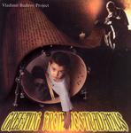

| Artist: | Vladimir Badirov Project |
| Title: | Greeting From Nostradamus |
| Label: | Unicorn UNCR-5013 |
| Length(s): | 55 minutes |
| Year(s) of release: | 2004 |
| Month of review: | [03/2005] |
| 1) | Nomad In Time | 4.25 |
| 2) | Dreamway To Scotland | 3.45 |
| 3) | Lay Back, Nasretdin! | 2.03 |
| 4) | Ultimately For Screwy DJ | 4.36 |
| 5) | The Heart | 4.10 |
| 6) | Mechanical City | 4.55 |
| 7) | Greeting From Nostradamus - Caravan Enduro | 1.56 |
| 8) | Greeting From Nostradamus - Bottomless Abyss | 2.55 |
| 9) | Greeting From Nostradamus - Shaman | 2.50 |
| 10) | Greeting From Nostradamus - Vacuum Hush | 1.51 |
| 11) | Greeting From Nostradamus - Artificial Paradoxes | 4.47 |
| 12) | Greeting From Nostradamus (alternative Edition) | 3.50 |
| 13) | The Heart (duduk Version) | 4.11 |
| 14) | Cold Passion (Artificial Paradoxes) | 8.23 |
The Heart is pretty bouncy, based on flute and bongo type rhythms, creating a very danceable feel. This is enhanced by the electronics, which seem to be adopted from the dance scene. Mechanical City combines sections based on violin and a clarinet alike instrument, with both traditional and western percussion.
Greeting From Nostradamus opener Caravan Enduro is pretty western, based on a rock ballad type guitar solo. Bottomless Abyss brings in the flute, a little less western. Shaman sports a huffy trumpet, making this section sound very jazz oriented, a bit in the direction of Miles Davis' eighties experiments. Vacuum Hush is a bit lifted with lingering guitar and electronics. Artificial Experiments is quite close to more current King Crimson material: heavy on rhythm in both percussion and bass, with broken up guitar laid across. This five piece is the most western directed material on the disc, and could be construed as progressive related.
Greeting From Nostradamus (alternative edition) and The Heart (duduk version) don't add much perspective. Cold Passion is guitar meister directed. Pretty okay in its sort.